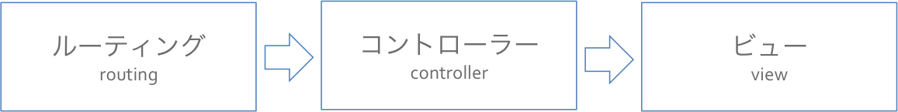
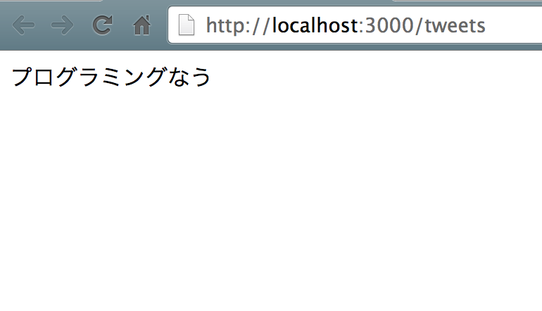
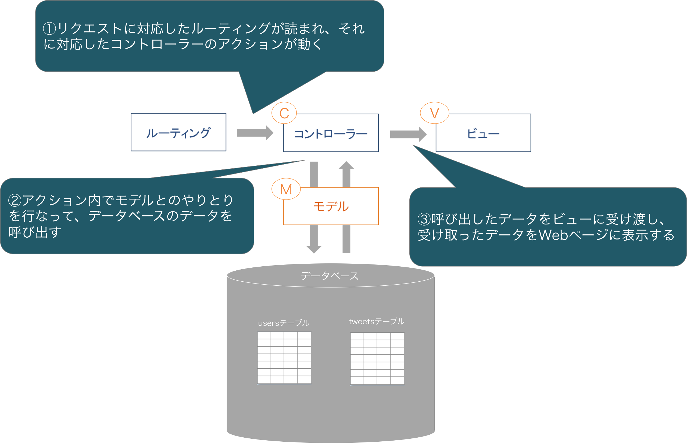
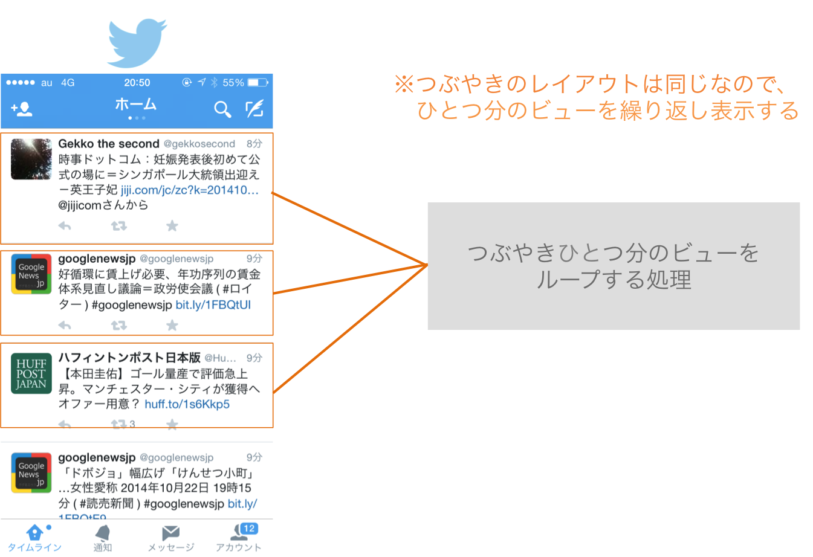
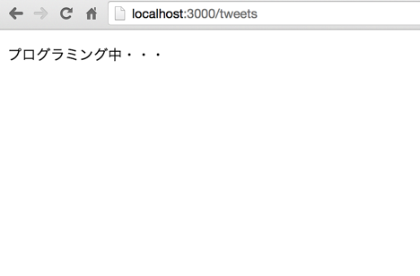
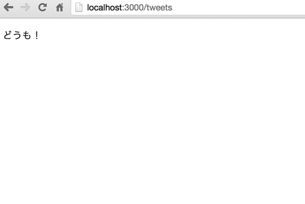
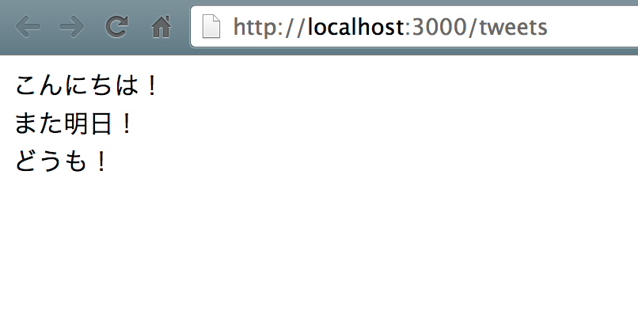
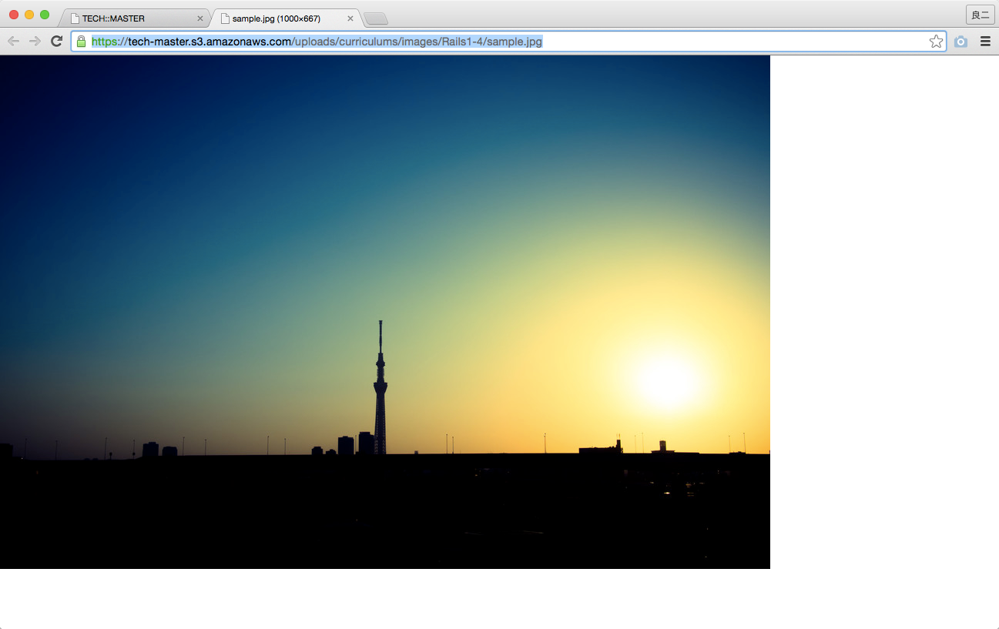
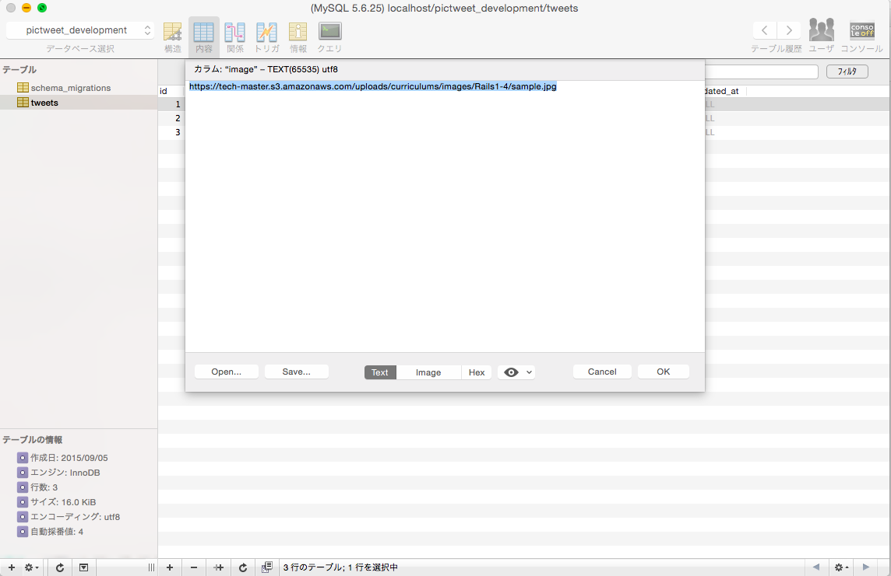
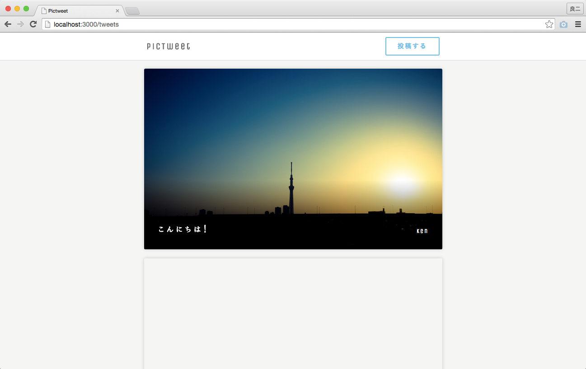

モデルを利用して、データベースに保存されたデータを一覧画面に表示しましょう
・モデル
・データベース
・レコード
・CSSファイル
Railsでの処理がルーティング→コントローラー→ビューの順番で進むことは以前に学習しました。その際にコントローラーの役割をルーティングからビューへと処理を受け渡す役割と説明しました。実はそれだけでなく、受け渡す際にコントローラーの中で処理を行なうことも可能なのです。そこで今回はコントローラーからビューにデータを受け渡し、そのデータをビューで表示するという作業を行ないます。

1 2 3 4 5 6 7 |
class TweetsController < ApplicationController
def index
@tweet = "プログラミングなう"
end
end
|
コントローラークラスでインスタンス変数(@つきの変数)を定義すると、そのインスタンス変数はビューで呼び出すことができるという決まりがあります。今回の作業では、@tweet = "プログラミングなう"と定義しました。つまり、ビューにおいて@tweetを呼び出すと、"プログラミングなう"という情報を使用できるというわけです。
先ほどの編集によってビューに@tweet = "プログラミングなう"という情報が渡されたはずです。そこで今回はビューに渡されたデータを実際に表示してみようと思います。
先ほどの作業で、インスタンス変数をtweets_controllerのindexアクションの中で定義しました。その場合このインスタンス変数は、indexアクションに対応したビューであるapp/views/tweets/index.html.erbの中でのみ呼び出しが可能です。他のアクションで定義したインスタンス変数を呼び出すことはできません。
1 |
<%= @tweet %>
|
ビューで、定義した変数を使用するためには<%= %>で変数名を囲んであげる必要があります。<%= %>の中のrubyコードは、ビューをレスポンスとして返すまでに実行されて、最終的にはHTMLコードとして返されます。<%= %>を利用するにはビューの拡張子が.erbになっている必要があります。
1 |
<%= 変数名 %> #変数をビュー内で使用
|
これでビューにデータを受け渡し、表示させるということができているはずです。そこで、実際にサーバーを立ち上げて確認してみましょう。
また=がない<% %>でもRubyの記述を行うことは可能です。しかし<% %>の場合は結果を出力されないため、出力をしない計算や繰り返し処理、条件分岐などRubyコードを記述するのに使用します。
1 2 3 4 5 |
$ cd ~/projects/pictweet
# アプリケーションのあるディレクトリに移動
$ rails s
# テストサーバーを起動
|

上記の作業でコントローラーからビューにデータを受け渡して、表示するということを学びました。そこで今回は前章で学習したモデルを使って、データベースの値を取り出し、ビューへ受け渡し、その情報を表示させたいと思います。
Railsではルーティング→コントローラー→モデル→ビューの順番に処理が行われます。このようにモデル(model)とビュー(view)とコントローラー(controller)を使用して処理を行なうシステムをそれぞれの頭文字を取ってMVCと呼ばれています。以下に処理の流れをまとめたので、確認してみましょう。

1 2 3 4 5 6 7 |
class TweetsController < ApplicationController
def index
@tweets = Tweet.all
end
end
|
上記の編集によって@tweetsというインスタンス変数に、tweetクラスのインスタンスの配列が定義されました。allというメソッドはテーブルの全てのレコードを取得するものなので、@tweetsにはtweetsテーブルの全てのレコードの情報を持っています。
以前に学んだモデルの使い方を思い出してください。上記の編集によってビューにツイートテーブルの全てのレコードがインスタンスの配列として受け渡されました。これからそれらの情報をビューに表示させていきたいと思います。
その際、部分的にhtmlを別途用意しておき、繰り返し利用するという方法をとります。まずはhtml上に別のhtmlを呼び出す方法(部分テンプレート)について学び、続いてそこに1つのtweetの情報を表示、さらに複数のtweetを表示する方法まで解説していきます。
ビューを作成する際に同じようなレイアウトの部分が複数存在する場合があります。例えば、Twitterを思い浮かべてください。
Twitterでは複数のツイートが表示されていますが、これらのHTML構造は全て同じです。このような場合に同じHTML構造の部分を共通化することによって、無駄なくビューファイルを作成することが出来ます。この共通化された部分を、 部分テンプレートといいます。 部分テンプレートを使用した場合、そのHTML構造を他のビューでも使いまわすことができるという利点も存在します。
また、部分テンプレートのファイル名は必ずアンダーバー「_」から始まります。

それでは、部分テンプレートを作成してみましょう。
1 |
<p>プログラミング中・・・</p>
|
続いて、こちらの部分テンプレートを呼び出します。そのためには、renderメソッドを利用します。
renderメソッドは、部分テンプレートを呼び出す際に利用するメソッドです。
renderメソッドに :partialというオプションをつけることで、明示的に部分テンプレート名を指定し、部分テンプレートを表示することができます。
以下の例では、partialオプションにて部分テンプレート名をsampleとしているので、_sample.html.erbを呼び出します。
1 |
render partial: "sample"
|
では、renderメソッドを利用して_tweet.html.erbを呼び出しましょう。
1 2 3 |
<div class="contents row" >
<%= render partial: "tweet" %>
</div>
|
その後サーバーを立ち上げた状態で「localhost:3000/tweets」にアクセスすると、以下のような表示になっているはずです。
これは、renderメソッドによって部分テンプレート _tweet.html.erbが呼び出されたためです。

続いて、データベースから1つのtweetの情報を取ってきて、部分テンプレートによってindex.html.erbに表示してみましょう。
まずはコントローラーにて、データベースから一つのtweetの情報をとってきます。
1 2 3 4 5 6 7 8 |
class TweetsController < ApplicationController
def index
@tweets = Tweet.all
@tweet = Tweet.find(3)
end
end
|
これで、index.html.erb上で@tweetという変数も利用できるようになりました。(単数形であることに注意してください)@tweetには、tweetsテーブルのレコード1行が、Tweetクラスのインスタンスとして代入されています。早速、部分テンプレートにて@tweetを利用しましょう。
1 |
<p><%= @tweet.text %></p>
|
こうすることで、localhost:3000/tweetsにアクセスした際、@tweetに代入されているtweetsテーブルのレコードの、textカラムの値が表示されるようになります。確認してみましょう。

続いて、複数のtweetの情報を、1つの部分テンプレートで繰り返し順番に表示します。そのために、renderメソッドについてもう少し詳しく説明していきます。
部分テンプレートを繰り返し表示したい場合、renderメソッドに :collection というオプションをつけることで実現できます。具体的には、以下のように利用します。
1 2 3 |
<div class="contents row" >
<%= render partial: "tweet", collection: @tweets %>
</div>
|
このようにすると、部分テンプレートである_tweet.html.erbの中身を、@tweetsのレコードの数だけ繰り返し表示するようになります。
このとき、部分テンプレート内で使用される変数は、partialオプションで指定した部分テンプレート名(今回の場合はtweet)になります。具体的な挙動を見るとわかりやすいので、一旦コードを書き切りましょう。
続いて、_tweet.html.erbを編集します。
1 |
<p><%= tweet.text %></p>
|
やったことは、「@tweet」を「tweet」にしただけです。先ほどpartialオプションにてtweetと指定したので、部分テンプレートで使用される変数はtweetです。
これはrubyの章で扱ったeachメソッドの挙動に似ています。以下のコードだと、配列オブジェクトであるanimals内の要素1つ1つを変数animalに入れています。
1 2 3 4 |
animals = ["いぬ", "ねこ", "ねずみ"]
animals.each do |animal|
puts animal
end
|
今回の場合だと、コントローラーからビューへ複数のツイート情報が@tweetsとして渡されました。
partialオプションでtweetと指定しているので、ここに@tweets内の要素1つ1つが入ります。
ビューではそれぞれのツイートに対して同じようなHTML構造で表示を行ないます。
コントローラーにある@tweetはもう必要無いので、消してしまいましょう。
1 2 3 4 5 6 7 |
class TweetsController < ApplicationController
def index
@tweets = Tweet.all
end
end
|
先ほど編集した_tweet.html.erbのtweet.textという記述に注目してください。この記述のtweetという変数はtweetsテーブルの１つ１つのインスタンスを示しています。その場合、変数.カラム名と記述することによって、そのインスタンスのプロパティ値を取り出すことができます。
以下の例を参考にしてみましょう。まずはtweetという変数にtweetモデルのインスタンスを定義します。そして、そのインスタンスに対して.カラム名と記述することによって、そのプロパティ値を取り出すことが出来ます。
1 2 3 4 5 6 7 8 9 10 11 12 13 |
[1] pry(main)> tweet = Tweet.new(name: "Sato", text: "Hello!", image: "test.jpg")
=> #<;Tweet id: nil, name: "Sato", image: "test.jpg", text: "Hello!", created_at: nil, updated_at: nil>;
[2] pry(main)> tweet.save
(0.2ms) BEGIN
SQL (26.2ms) INSERT INTO `tweets` (`created_at`, `image`, `name`, `text`, `updated_at`) VALUES ('2014-11-01 02:07:11', 'test.jpg', 'Sato', 'Hello!', '2014-11-01 02:07:11')
(1.3ms) COMMIT
=> true
[3] pry(main)> tweet.name
=> "Sato"
[4] pry(main)> tweet.text
=> "Hello!"
[5] pry(main)> tweet.image
=> "test.jpg"
|
以上でビューファイルの適用が終わりました。そこでさっそくサーバーを立ち上げて表示を確認してみましょう。
※テストサーバーを立ち上げていない場合にはもう一度「rails s」コマンドでサーバーを起動する必要があります。

部分テンプレートとrenderメソッドに関しては重要な要素が多くわかりづらいので、動画で要点を確認しましょう。
先ほど作成したビューは装飾がなく素っ気ないものでした。そこで、このビューにHTML、CSSファイルを適用して装飾を加えてみます。
Railsのビューファイルではヘルパーメソッドというメソッドを呼び出すことができます。ヘルパーメソッドを呼び出すことで、ビューファイルの中で処理を行なうことができます。実際に呼び出す場合には<%= メソッド名(引数) %>という形で使用します。
1 2 3 |
<div>
<%= メソッド名(引数) %>
</div>
|
ヘルパーメソッドはapplication_helper.rbというファイルに定義します。このファイルの中にメソッドを定義することで、ビューからヘルパーメソッドとして呼び出すことができます。
1 2 3 4 5 |
module ApplicationHelper
def br(str)
h(str).gsub(/(\r\n?)|(\n)/, "<br />").html_safe
end
end
|
brというヘルパーメソッドはビューで入力された改行をツイートに反映させるためのものです。詳しい処理については学習しなくて良いので、このメソッドが改行を反映させるためのものであるということだけ確認しましょう。
1 2 3 4 5 6 |
<div class="content_post" style="background-image: url(<%= tweet.image %>);">
<p>
<%= br(tweet.text) %>
</p>
<span class="name"><%= tweet.name %></span>
</div>
|
_tweet.html.erbの３行目を見てください。<%= %>の中にbrとあります。つまりこの記述は、tweet.textを表示する際にbrというヘルパーメソッドを呼び出していることを示しています。
HTMLファイルの適用が終わったので、続いてCSSファイルの適用を行なっていきます。
CSSファイルの読込みはHTMLのヘッダー部分のstylesheet_link_tagから読み込まれます。Railsの場合レイアウトファイルがあるので、application.html.erbにヘッダーの記述があります。application.html.erbの5行目に注目してください。
1 2 3 4 5 6 |
<head>
<title>Pictweet</title>
<%= stylesheet_link_tag 'application', media: 'all', 'data-turbolinks-track' => true %>
<%= javascript_include_tag 'application', 'data-turbolinks-track' => true %>
<%= csrf_meta_tags %>
</head>
|
cssファイルはapp/assets/stylesheets/というディレクトリに配置します。application.html.erbのstylesheet_link_tagの部分にapplicationと書いてあるので、このHTMLからはapp/assets/stylesheets/application.cssというCSSファイルを読み込むことを示しています。
application.cssの13行目に注目してください。
1 2 3 4 |
*
*= require_tree .
*= require_self
*/
|
application.cssには、どのcssを読み込むかという設定が書いてあります。require_treeには引数として与えられたディレクトリ以下のcssファイルをアルファベット順に全て読み込むという意味があります。現在require_treeの引数には.(ドット)が渡されています。引数.(ドット)はカレントディレクトリを表します。つまり、この記述によってapp/assets/stylesheetsというディレクトリにあるcssファイルは全て読み込まれることになります。
※ファイルを追加する際には既に存在するファイルは削除しないでください
scssという拡張子はcssファイルの一種ですので、今は気にせずに追加しましょう
レイアウトを編集する際に、CSSやHTMLの編集に加えて文字のフォントの編集も可能です。Railsでフォントを変更する際にはフォントファイルというものを追加します。
フォントファイルとは、文字のフォントを変更するためのファイルです。このファイルには、フォントの情報が記載してあります。Railsでフォントを読み込むためにはapp/assets/fontsというディレクトリにフォントファイルを配置し、CSSファイルにフォントファイルの読み込みを記述する必要があります。
追加したフォントを使用する際には、CSSファイルにフォントファイルの指定を行ないます。app/assets/stylesheets/style.scssの11行目に注目してください。font_1_honokamin.ttfという記述があり、これがフォントファイルの指定を行なっています。
1 2 3 4 5 6 |
@font-face {
font-family: 'ほのか明朝';
src: url('font_1_honokamin.ttf') format('truetype');
font-weight: normal;
font-style: normal;
}
|
以上の作業で、HTMLの編集、CSSの編集、フォントファイルの適用が終了しました。これから、実際に編集が適用されているかを確認しましょう。
上のリンク先から画像のURLをコピーします。

sequel Proのtweetsテーブルを開き、一番上のレコードのimageカラムをダブルクリックすると以下の画像のように表示されるので、今コピーした画像のURLをペーストしましょう。

テストサーバーを立ち上げていない場合にはもう一度「rails s」コマンドでサーバーを起動する必要があります。
以下の画面のようになっていることを確認しましょう。

ここまでで、Ruby on Railsがリクエストを受けてからビューファイルをブラウザに表示させるまでの基本を学び終わりました。ここまでの「ルーティング → コントローラー → ビュー」の流れを、要点チェックシートに含まれている「Rails全体フロー図」を見て確認しましょう。
要点チェックシートをダウンロード
2章で作成した、Nekotterの続きを開発しましょう。問題形式で学習することで、良い復習になります。必ず取り組むようにしてください。
問題を解き終えたら、実際にNekotterを開発しつつRailsのポイントに関して解説している動画を見て、理解を深めましょう。
お疲れ様でした！このカリキュラムの終わりに確認問題を解きましょう。
テストを受けた回数：1回
最高得点：87点
合否：合格